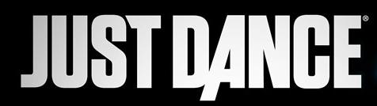

Dance Central é uma franquia de jogos de dança desenvolvido pela Harmonix, criadores do Guitar Hero e do Rock Band. O jogo conta com diversos modos e uma extensa variedade de músicas para todos os estilos e também equipes de dança diferentes para se escolher.
Dance CentralEquipes

Dance Central é uma franquia de jogos de dança desenvolvido pela Harmonix, criadores do Guitar Hero e do Rock Band. O jogo conta com diversos modos e uma extensa variedade de músicas para todos os estilos e também equipes de dança diferentes para se escolher.